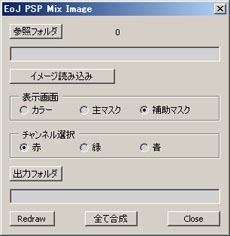
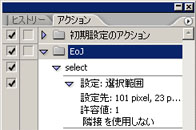

s000192_EoJ_PSP_MixImage

機能： ３つのフォルダ内のイメージからマスクを作成しtgaにて出力します。
要アクション機能：
このスクリプトはアクションで選択を行っております。
フォトショップのアクションにEoJタブを追加しselectというアクションを作成して自動選択ツールにて
全てのオプションをoffの状態でドキュメント左上当りを選択するだけのアクションを別途用意してください。
以下参考。

機能説明：
参照フォルダ： 読み込みフォルダ指定
イメージ読み込みボタン： ３種のフォルダそれぞれからイメージを読み込み１個のドキュメントにします
表示画面ラジオボタン： １個にされたドキュメントから対応のイメージのみ表示
カラー ベースとなるイメージ
主マスク キャラのマスクイメージ（ブルーバック等でのキャプチャーイメージ）
補助マスク エフェクト抜き用のイメージ
チャンネル選択ラジオボタン： 補助マスクで選択されているイメージの各チャンネル表示
赤 赤チャンネルの表示
緑 緑チャンネルの表示
青 青チャンネルの表示
出力フォルダボタン： tgaにて出力するフォルダ指定
全て合成ボタン： 上記の設定を３種の中にある全てのファイルに適用→出力
Closeボタン： スクリプト終了
フォルダー階層規定：
フォルダー階層は以下の様にして下さい。（フォルダ名はスクリプト内部で使用の為変更不可もあります）
mix_test （1個のキャラを纏める為なので解りやすくしてください。）
∟rgb （ベースとなるイメージのフォルダ ※変更不可）
∟mask1 （キャラのマスク抽出用フォルダ ※変更不可）
∟mask2 （エフェクト抽出用フォルダ ※変更不可）
∟z076 （tga出力フォルダ ※キャラIDにして下さい。このフォルダ名を出力ファイルに付けます。）
※実は合成の為のフォルダ下にrgb,mask1,mask2の３個が並列にあればその他は最重要ではありません。
使用法：
上記フォルダー階層にそれぞれのイメージをwinviewerにてキャプチャーします。
rgbフォルダにはキャラ＋エフェクトイメージでBGカラーがグレイのイメージ連番
mask1フォルダにはグリーンバック等でエフェクト無しのキャラ抽出用イメージ連番
mask2フォルダにはエフェクト有りでグリーンバック等のチャンネルカラーからエフェクト部分を抽出用イメージ連番
上記3フォルダそれぞれに入るイメージ数は全て同じにしてください。
スクリプトはrgbフォルダの総数のみカウントします。又それぞれのイメージの開始番号はずれていてもOKです。
参照フォルダボタンにて上記mix_testに当るルートのフォルダを選択しイメージ読み込みボタンを押す事で
３個のフォルダそれぞれから一番小さい番号のイメージを読み込み一枚のドキュメントにします。
その後表示画面のラジオボタンにて各種のイメージを見ることが出来ます。
補助マスクを表示させエフェクトを抜くのに一番適していると思われるチャンネルをチャンネル選択ラジオボタンの
各要素から選んでください。決定したら出力フォルダボタンにてキャラIDのフォルダを選択設定し全て合成ボタン
にて各フォルダのイメージを連番で出力していきます。
備考：
スクリプトはフォトショップインストールフォルダにコピーして下さい。起動中のコピーは再起動が必要です。
例：C:\Program Files\Adobe\Adobe Photoshop
CS2\プリセット\スクリプト の下。
スクリプトはアクションにボタンとして割り付けられます。